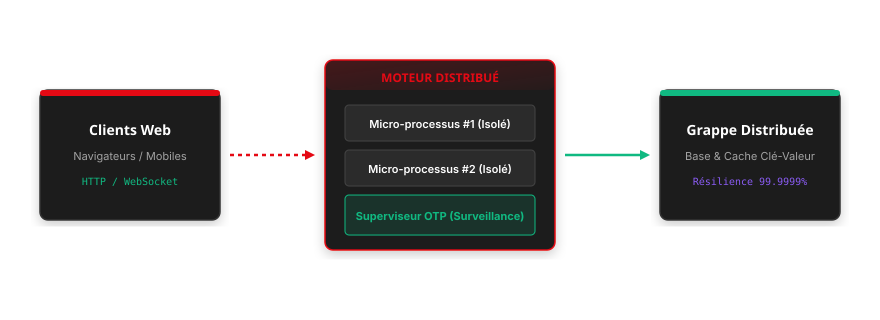

Titre de la Présentation
Partie 1 : Fondations
Contexte, historique, limites des approches existantes et changement de paradigme.
Partie 2 : Architecture & Code
Piliers clés d'ingénierie, syntaxe, flux de données réactifs et démonstrations en direct.
Partie 3 : Quizz & TP
Validation collective des notions à main levée puis mise en pratique immédiate sur machine.
Contexte & Limites des Approches Traditionnelles
Pourquoi les architectures monolithiques ou les piles complexes atteignent leurs limites.
L'Ancien Modèle / La Limite
Friction constatée- Complexité accidentelle : multiplication des couches d'abstractions et friction frontend/backend.
- Coût mémoire prohibitif : chaque thread lourd consomme des ressources excessives et bloque sous forte charge.
- Maintenance chronophage : synchronisation fragile entre plusieurs dépôts et états asynchrones dispersés.
La Rupture Technologique
Solution moderne- Modèle unifié : une base de code unique où le serveur pilote l'interface sans boilerplate d'API REST.
- Concurrence ultra-légère : des millions de processus indépendants isolés ne partageant aucune mémoire sensible.
- Résilience industrielle : détection immédiate des pannes locales et redémarrage automatique dans un état sain.
Processus de Déploiement & Piliers Fondamentaux
Cycle de vie unifié pour garantir montée en charge, clarté et sécurité du code.
Modélisation fonctionnelle
Micro-processus indépendants
Résilience automatique
Immuabilité
Données 100% immuables : zéro effet de bord masqué.
Isolation Pure
Chaque tâche tourne dans son propre micro-processus.
Temps Réel Natif
Mise à jour granulaire du DOM via WebSockets permanents.
Supervision
Philosophie « Let it crash » avec reprise sur erreur instantanée.
Indicateurs Clés & Comparatif de Performance
Mesures comparatives sur un cluster de 10 000 connexions concurrentes simultanées.
| Métrique Évaluée | Monolithe Classique | Nouvelle Architecture |
|---|---|---|
| Consommation RAM | ~12 Go (Threads OS) | ~850 Mo |
| Temps de Réponse p99 | 340 ms | 18 ms |
| Déploiement à Chaud | Interruption requise | Zero-Downtime |
| Résilience aux Pannes | Redémarrage conteneur | Auto-guérison locale |
Débit Transactionnel
Requêtes traitées / seconde
Latence Réseau
Sur les flux temps réel
Disponibilité Haute Fréquence
Mesurée sur 12 mois de production continue
Implémentation Déclarative & Pipelines Purs
Organisation modulaire du flux métier sans variables intermédiaires superflues.
Principes de Conception
- Dispatch déclaratif : têtes de fonctions distinctes pour séparer cas d'erreur et cas nominal.
- Opérateur pipeline (
|>) : passage fluide du résultat vers l'étape suivante. - Typage strict : validation des données en amont sans exceptions masquées.
# Traitement déclaratif et typé du flux de données
def traiter_commande(donnees: dict) -> Result:
return (
donnees
|> valider_schema
|> enrichir_metadonnees
|> persister_en_base
|> diffuser_evenement_temps_reel
)
def valider_schema(payload: dict) -> dict:
if payload.get("statut") == "actif":
return payload
raise ValidationError("Données non conformes")Topologie Distribuée & Flux Temps Réel
Vue d'ensemble de la communication asynchrone entre clients web et processus BEAM.

Question : Quelle est la force principale de l'isolation mémoire par micro-processus ?
Analysez les propositions ci-dessous avant d'afficher la réponse argumentée :
Dans un modèle où chaque entité possède son propre micro-processus ne partageant pas de mémoire, toute anomalie est circonscrite. Les superviseurs rétablissent immédiatement le composant défaillant dans un état propre sans impacter les autres requêtes actives.